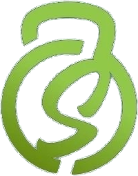

Supera FitnessA noite em que Santo Antônio da Patrulha correu pelo Outubro Rosa.
Espaço para o relato de um atleta, coletado com autorização.Nome do atleta · 5 km
Agradecimento da organização à equipe e aos patrocinadores.Organização do evento
Relato de quem fez a primeira prova da vida.Nome da atleta · 3 km
Recado de um patrocinador ou parceiro.Parceiro do evento
Quem correu a Pink Night Run tem a primeira semana de treino por conta da Supera Fitness.
Conhecer a academia